工程 · 数字工具研发中
工程量计算工具
面向工程造价与预算编制工作，围绕工程量计算、计价与成果整理，探索更清晰的专业工作流程。
项目仍在研发与验证阶段，暂不提供公开下载或使用承诺。
PROJECTS / PUBLIC WORK
从已能体验的作品讲起。项目状态与体验入口以本页所列的公开信息为准。
VISUAL STORY
先选择一个主题，再横向浏览这一组画面。
ONE BOARD · TWO CIVILIZATIONS
从完整阵容、世界观与品牌主画面认识小骑士乐园。
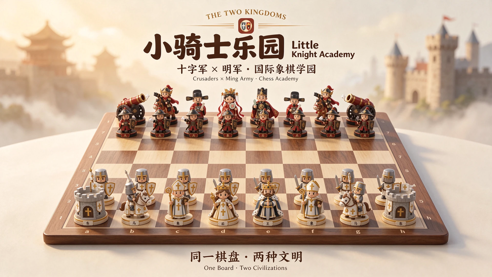
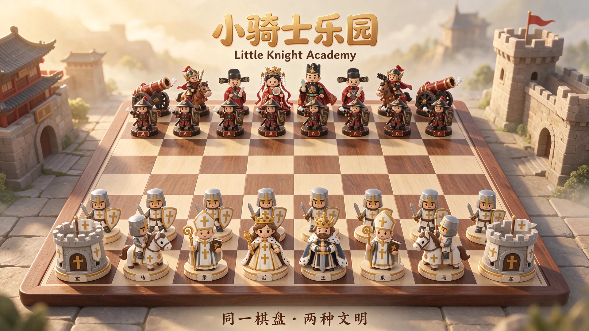
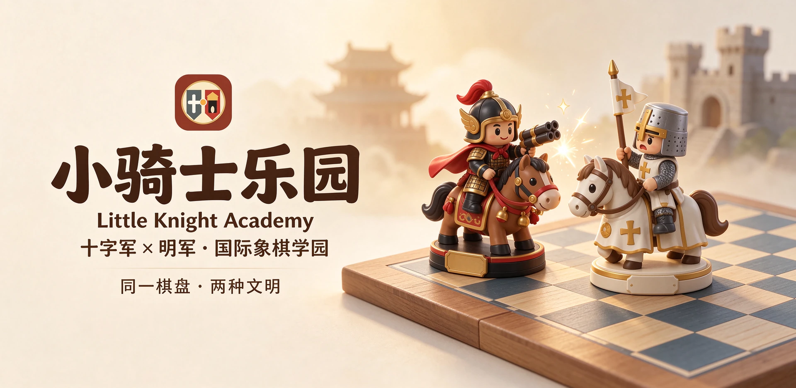
TWO TEAMS · TWELVE PIECES
明军与十字军拥有完整、独立的服饰、武器与角色轮廓。
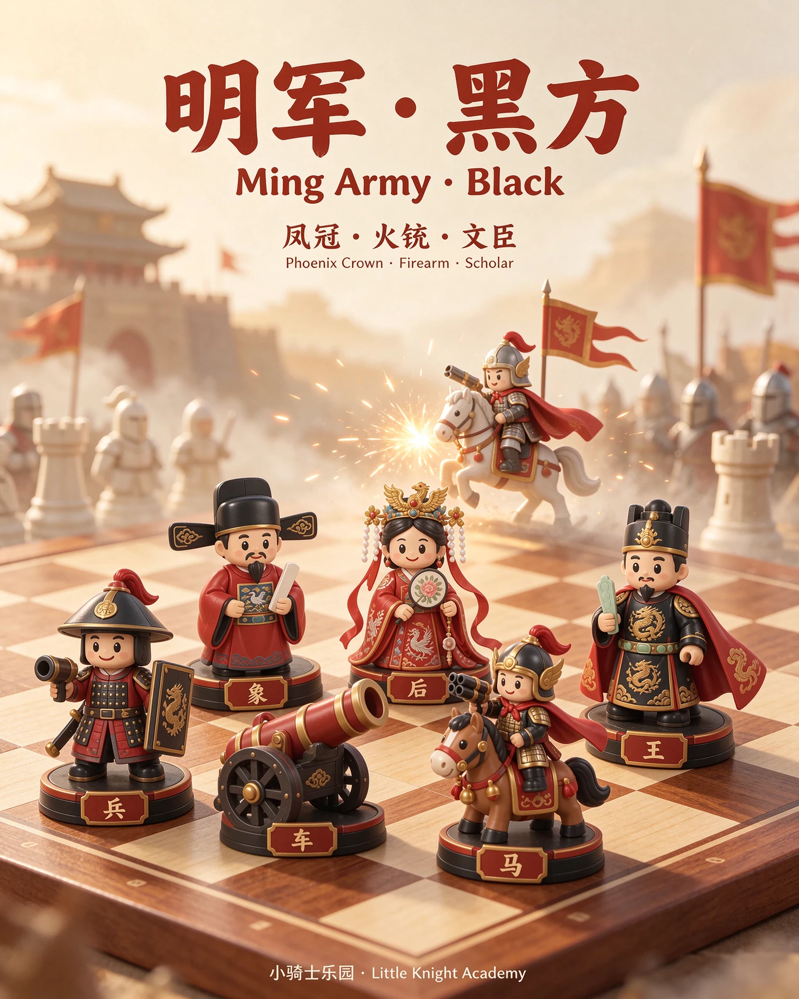
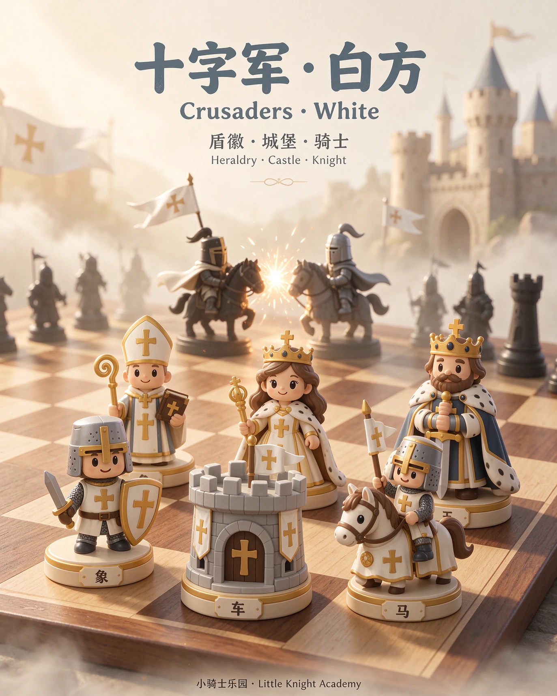
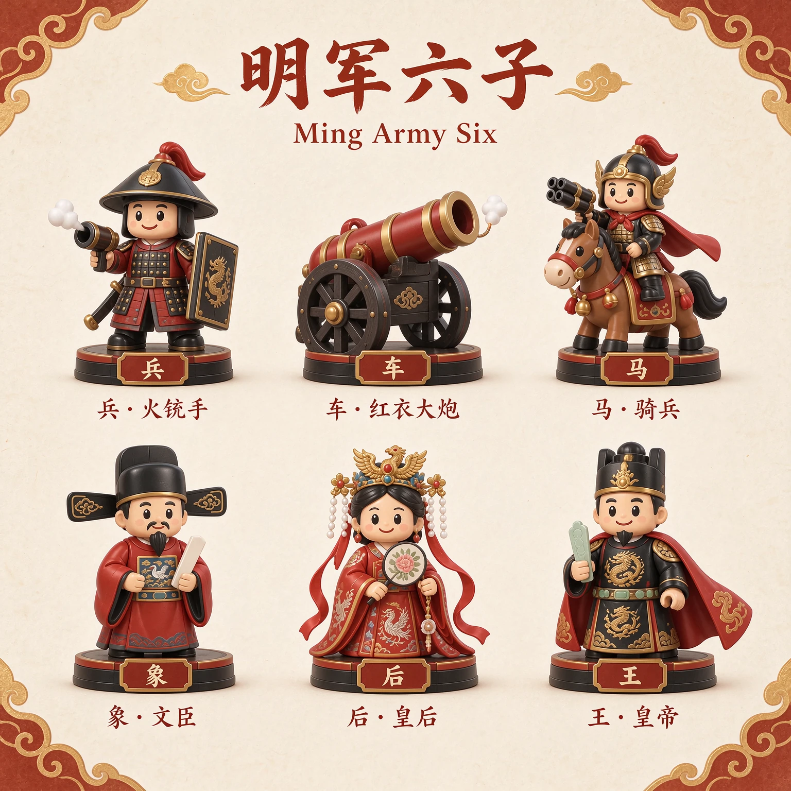
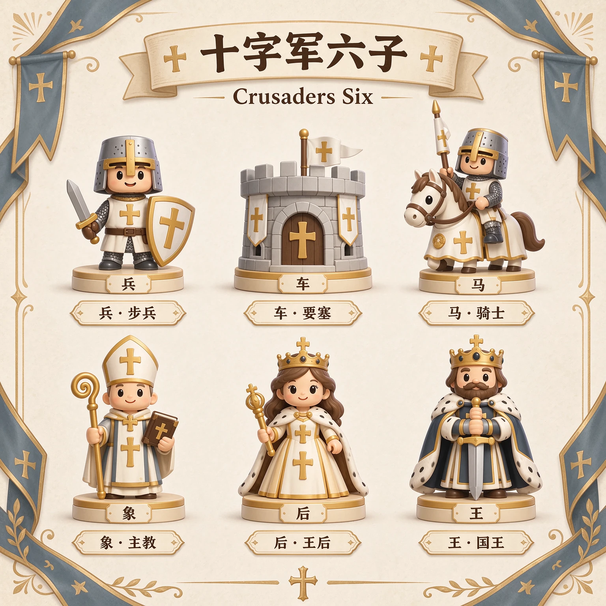
LEARNING EXPERIENCE
三节课循序渐进，把规则、角色与走法带到真实棋局。
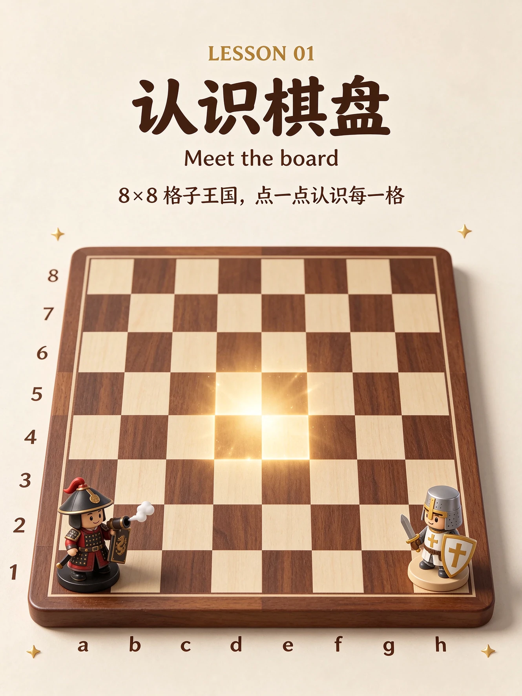
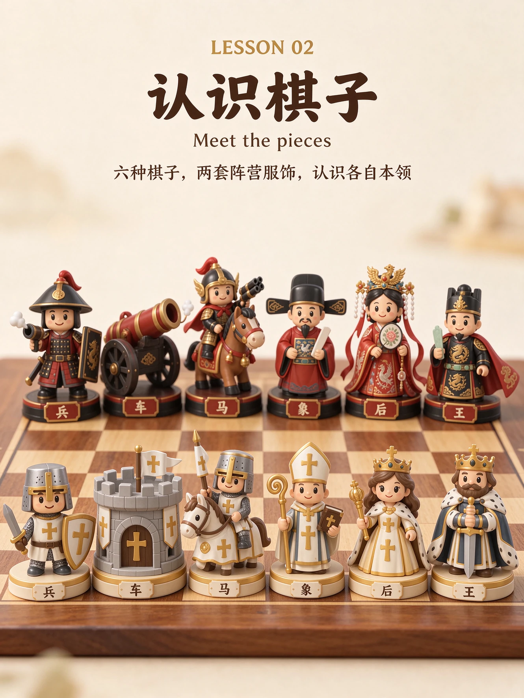
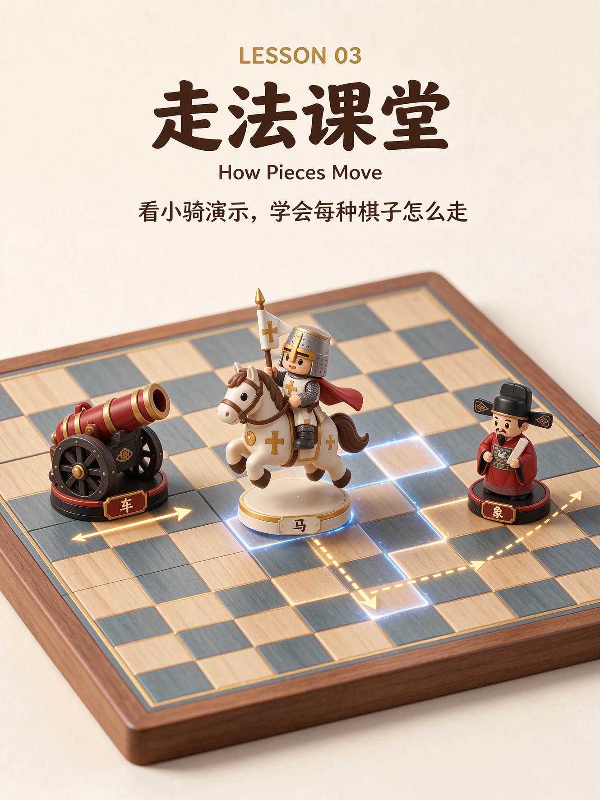
BEYOND THE BOARD
从孩子面对面的交流，到双方阵营进入更开阔的故事世界。
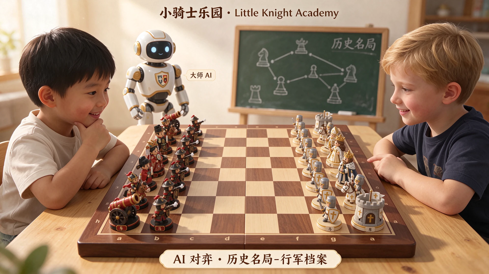
THE ACADEMY, WITH YOU
完整双阵营、课程入口与产品识别收进竖版画面，适配手机浏览与品牌分享场景。
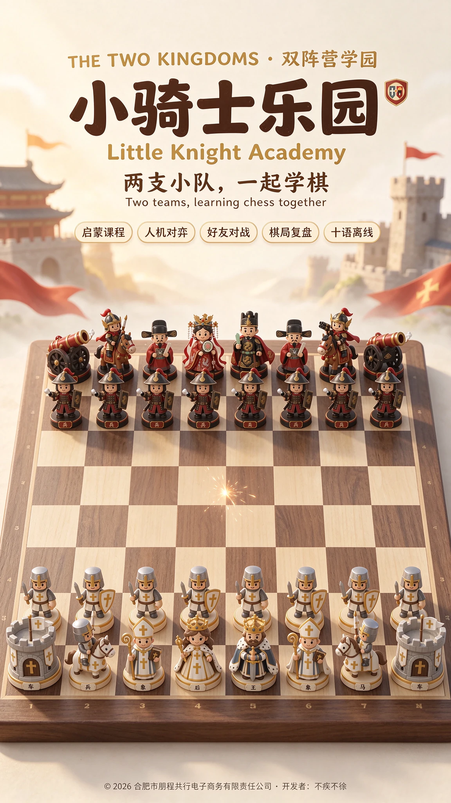
IN DEVELOPMENT
名称与用途已公开，内部资料保留
面向工程造价与预算编制工作，围绕工程量计算、计价与成果整理，探索更清晰的专业工作流程。
项目仍在研发与验证阶段，暂不提供公开下载或使用承诺。
面向阅读与持续学习，探索如何把文本中的知识梳理成清晰脉络，帮助使用者理解、回顾与连接想法。
项目仍在研发与验证阶段，暂不提供公开下载或使用承诺。